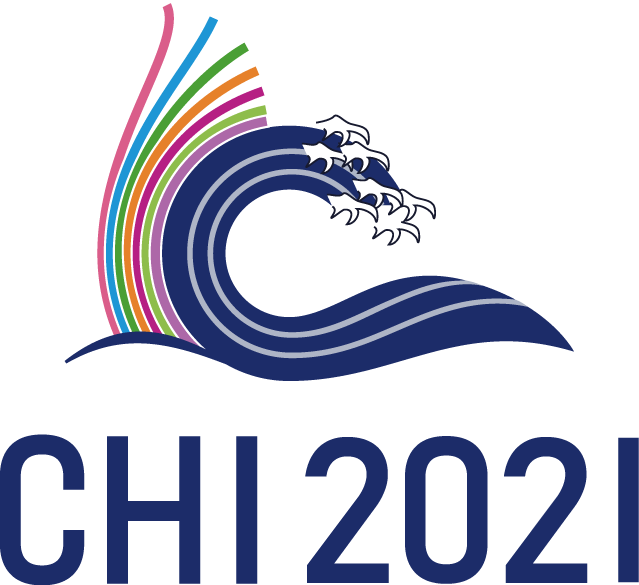
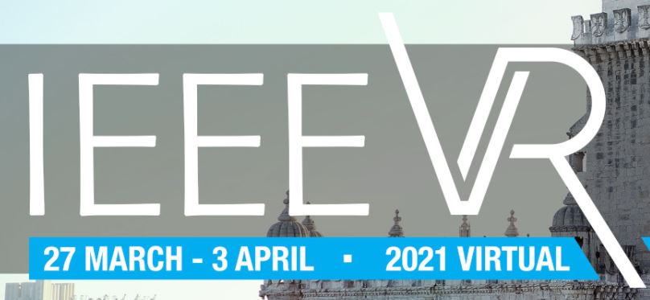
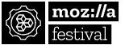
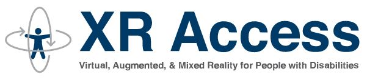
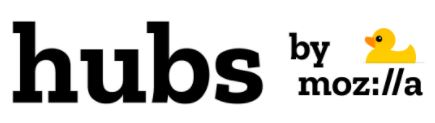
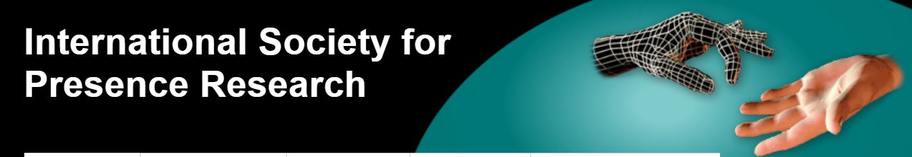
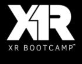

Inception:
In 2020, Max and Mar started an effort to tackle some of the knowlege gaps that hinders VR adoption. With their background in perception, they quickly identified Locomotion as a key aspect that was unsolved and relatively underserved.
To overcome that gap, they wanted to better characterize exisiting locomotion techniques and create something that the community could use. In light of that, Max started to document the existing methods and taxonomies from academia and game industry. As the literature search and database grew, they realized this wasn't a classical literature review project, but it would be best to create a living database. At about 20-30 techniques, they asked Hasti to join the effort. Her work on Haptipedia and other interactive databases seemed critical to the advancement of the project. Meanwhile, Max continued exploring existing taxonomies, classification attributes, and techniques. At one point, they asked Simon to join as a student researcher to further document the techniques and to try many of them on games.
This is how the Locomotion Vault was created. We invite you to explore the database in depth and contribute to make it better: Locomotion Vault.
For citing this work, please use: Massimiliano Di Luca, Hasti Seifi, Simon Egan, Mar Gonzalez-Franco. "Locomotion Vault: the Extra Mile in Analyzing VR Locomotion Techniques." In Proceedings of the 2021 CHI Conference on Human Factors in Computing Systems, pp. 1-10. 2021. (pdf)

People:
 Mar Gonzalez-Franco |
 Hasti Seifi |
 Massimiliano Di Luca |
Activities:
|  | May 8th-13th 2021 ACM CHI 2021. Max di Luca will present the Locomotion Vault paper at ACM CHI 2021. |
|  | April 2nd 2021 IEEE VR 2021 workshop Finding a Way Forward in VR Locomotion. We are organizing a workshop on April 2, 17:00-21:00 CEST to join the community of Locomotion and discuss ways forward. |
|  | March 8th 2021 Mozilla Fest: Mar Gonzalez participated on a Panel on Designing Accessible VR Experiences to explain Locomotion Vault. |
Recognition:
|  | XR Access: Featured as a resource for accessibility in XR. XR Access is a community committed to making virtual, augmented, and mixed reality (XR) accessible to people with disabilities |
|  | Mozilla Hubs 3D: A selection of locomotion techniques from Locomotion Vault were featured on a Hubs virtual tour on "Accessible VR". |
Oculus Developers: Featured as a resource for developing locomotion in VR. "For more inspiration, check out the VR Locomotion Vault which maintains a list of VR locomotion techniques and related information." |
|  | ISPR: The main society for presence research: "Some amazing researchers have collected and classified all the known VR locomotion methods, for a total of more than 100!" |
Other venues:
|  |